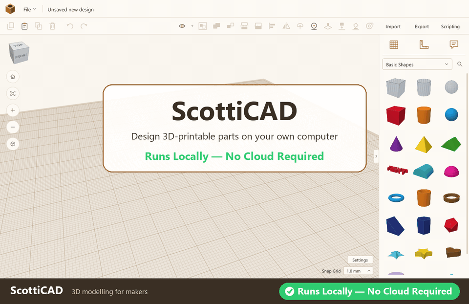
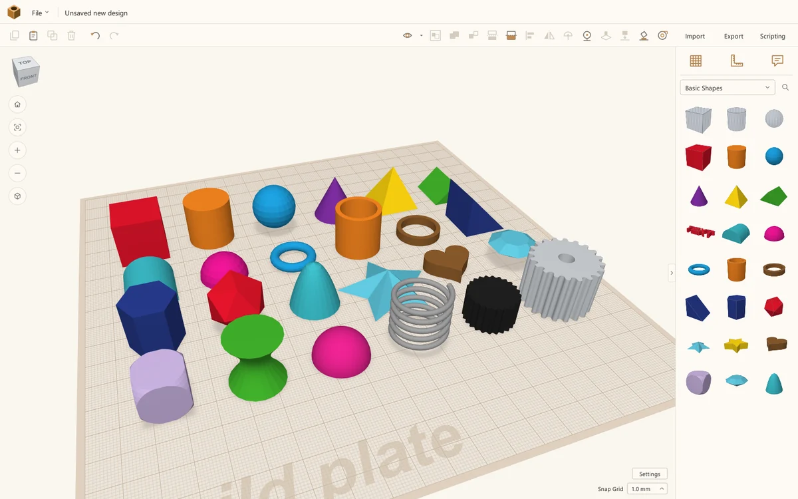
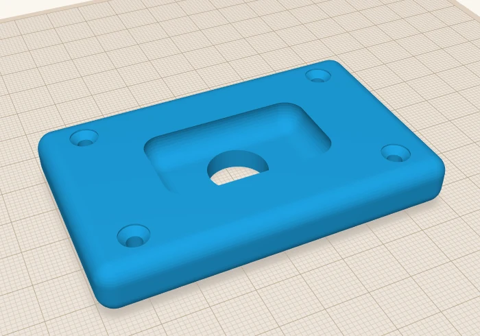
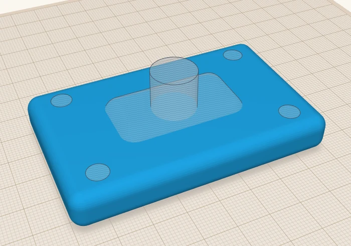
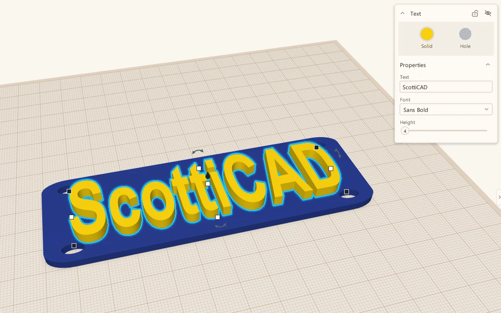
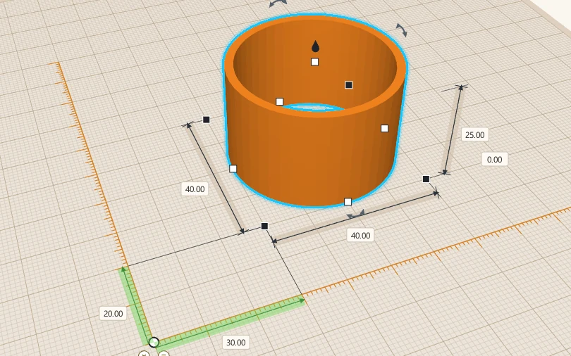
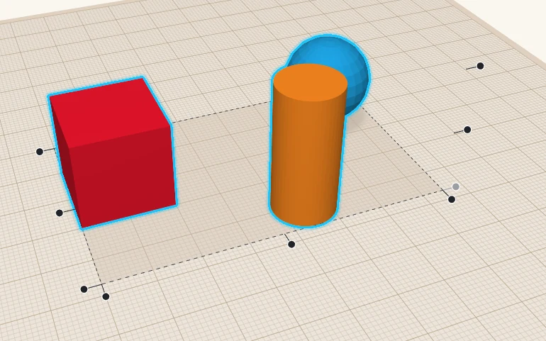
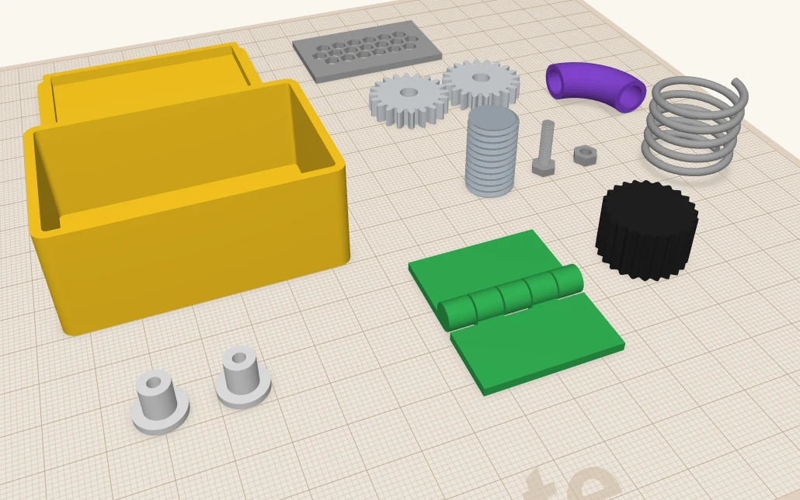

Runs locally
Everything happens on your PC. No upload step, no waiting on a server, no "service unavailable" the night before a print.
Free & open source · Version 0.1.0 for Windows
ScottiCAD is a friendly, hands-on 3D modeller for makers. Drag shapes onto the build plate, pull handles to size them, turn some into holes, and group them into a finished part. When you're done, export a clean, watertight 3MF or STL for your slicer. It's one small Windows program: no account, no browser, and no cloud.

Real-time, unedited: building a part in ScottiCAD from first shape to finished design.
Why ScottiCAD
Most people who own a 3D printer don't need a full engineering CAD package. They need a bracket that fits, a box for a circuit board, a replacement knob, a name tag for a niece's bike, or a spacer that's exactly 4.2 mm thick. The fastest way to make those things is the "building blocks" approach: put simple shapes together, cut holes where you need them, and let the computer work out the geometry.
That approach usually lives in a web browser, behind an account, with your designs stored on someone else's server. ScottiCAD brings it home. It's a native Windows application that starts in a moment, uses your graphics card directly, keeps working when the internet doesn't, and saves your designs as ordinary files in folders you choose. Back them up, put them in version control, email them to a friend. They're yours.
Everything happens on your PC. No upload step, no waiting on a server, no "service unavailable" the night before a print.
No telemetry, no sign-in, no cloud library. Your designs never leave your machine unless you send them.
Apache-2.0 licensed and written in Go. Read the code, build it yourself, fix what bugs you and send it back.
Features
If you can stack blocks, you can use ScottiCAD. Here's what's in the box.
Pick a shape from the panel on the right and drag it onto the build plate. As you drag, a ghost of the shape follows the mouse and lands on whatever surface is under the cursor, so stacking a cone on top of a box is a single gesture. Hold C to ignore other shapes and put it on the build plate instead.
The basics are all here: box, cylinder, sphere, cone, pyramid, roof, round roof, wedge, half sphere, torus, tube, ring, polygon, paraboloid, icosahedron, star, heart, diamond, dice and more. Every shape has sensible defaults and its own parameters: rounded corners on a box, sides on a cylinder, points on a star, wall thickness on a tube.

Any shape can be a Solid or a Hole. Holes are drawn see-through so you can line them up. Select the lot, press Ctrl+G, and ScottiCAD performs a true boolean mesh operation: the holes are carved out and the solids are merged into one part.
The result is a closed, watertight mesh that slicers accept without complaint. ScottiCAD repairs the seams that boolean operations tend to leave behind, and heavy groups are computed in the background on all your CPU cores, so the view never freezes while you work.
Grouping is non-destructive. Ungroup with Ctrl+Shift+G and you get your original shapes back, even after saving and reopening the file. Need to keep parts together without merging them? A Bundle group (Ctrl+B) moves them as one but keeps them separate.
Drag the slider to compare the parts before and after grouping.


Before AfterDrop a Text shape, type your words, and pick a font. ScottiCAD reads the TrueType and OpenType fonts already installed in Windows, so the font list is as long as yours. Letters are turned into proper solid geometry, with adjustable height and optional bevel.
Raise text for embossed labels, or switch it to a hole for engraved serial numbers, logos, and the name on the bottom of a part so you remember which version it was.

Every handle shows its dimension while you drag. Click any number to type an exact value, and press Tab to move between fields. Black corner handles resize, the white ones stretch a single side, the cone on top lifts the part off the build plate, and the curved arrows rotate it with a protractor that snaps to 22.5° on the ring, 1° inside it, or 45° with Shift.
Drop the Ruler anywhere to see a shape's distance from it and its full size in every direction, then type the numbers you want. The Measure tool reads the distance between any two points. Work in millimetres or inches, with a snap grid from fine to coarse.

Select a few shapes and press L to Align. Dots appear along each axis; hover one to preview the result as a ghost, click to apply. Centring a hole in a box takes two clicks. Mirror (M) flips a shape across any axis the same way.
Place on surface (C) lets shapes slide over the surfaces of other shapes as you move them. Drop down (D) settles anything floating back down, and Lay flat (Shift+D) turns a part so the face you click sits on the build plate. The Construction plane tool (W) puts a working plane on the face of any shape, even a rotated one, so you can build at an angle as easily as on the flat.

Beyond the basic shapes, ScottiCAD ships with a set of practical, adjustable parts for people who build things. Set a few numbers and get a correct part, instead of modelling it from scratch every time.
And for diagrams and dioramas, a set of tech icons: laptop, monitor, keyboard, server, rack, router, switch, cloud, database, Wi-Fi, laser printer and 3D printer.

Bring in meshes from anywhere, or drag a file straight onto the window. SVG outlines are extruded into solid shapes, which makes logos and laser-cut drawings easy to reuse.
Export everything or just the selection. 3MF (with colours), STL and OBJ for printing, binary glTF for the web and game engines, and an SVG outline for laser cutters.
Every step can be undone and redone, and undo puts your selection back the way it was. Experiment freely.
A full colour picker with presets and hex entry, multicolour groups that keep each part's colour, and see-through shapes for checking what's inside.
Hide shapes to get them out of the way, lock finished parts so they can't be bumped, and pin notes to shapes to remind yourself why that hole is 3.4 mm.
Paste in place, or duplicate and move: ScottiCAD remembers the step and repeats it, which makes rows of holes and arrays of pegs quick.
Orbit with the right mouse button, pan with the middle, zoom to the cursor. Click the view cube for a straight-on view, or switch to orthographic for true proportions.
Set the build plate to the size of your printer's bed so you can see at a glance whether the part fits.
Designs are saved as readable JSON .scotticad files that keep the full group tree, so nothing
is flattened and every step stays editable.
Cut a part in two with a plane (K) to print it in pieces, look inside with section view, and lay any face flat on the build plate with one click.
See how many grams and metres of filament a design needs, and what it will cost, from your own slicer settings, before you ever open the slicer.
A console and editor inside the app run Python-style scripts: rings of pegs, rows of holes, shapes from a list of points. A whole script undoes with one Ctrl+Z.
How it works
Pick boxes, cylinders, text and parts from the library and drop them on the build plate.
Pull handles or type exact numbers. Rotate, lift, align and mirror until it's right.
Turn shapes into holes, select everything and group. ScottiCAD does the boolean maths.
Save a watertight STL, open it in your slicer, and print. That's it.
For makers who code
Click Scripting and a console opens under the 3D view. Type at the prompt, or write longer scripts in the built-in editor, in Starlark, a dialect of Python. Loops, lists and functions work as you'd expect, and scripts can build shapes from your own lists of points: outlines extruded straight up, or lofts that join one outline to the next.
The same commands are available from outside. Start ScottiCAD with --api and it listens for
JSON-RPC on a local port; every action in the interface is available, from adding a shape to clicking a
toolbar button. A small Python client comes with the source. Use it to generate families of parts from a spreadsheet, batch-export
a folder of designs, build test fixtures, or drive the app headless and take screenshots. In fact, every still image
on this page was rendered that way.
# A mounting plate with a centred hole, scripted.
from scotticad import launch
with launch(headless=True) as cad:
plate = cad.add_shape("box")
cad.select([plate])
cad.set_size(80, 50, 4)
hole = cad.add_shape("cylinder", hole=True)
cad.select([plate, hole])
cad.align("x", "center")
cad.align("y", "center")
cad.group("union")
cad.export("plate.stl")
cad.screenshot("plate.png")Under the hood
ScottiCAD is written from scratch in Go, with no browser engine and no heavyweight framework underneath.
The 3D view and the entire interface are drawn with OpenGL 3.3 on your GPU, with multi-sample anti-aliasing, soft shadows and pixel-exact picking of shapes and handles.
The screen only redraws when something changes. When you're thinking, ScottiCAD isn't using your CPU or spinning your fans.
BSP-tree constructive solid geometry with seam repair, result caching and multi-core evaluation. Large designs open in seconds, and the view stays responsive while groups are computed.
No installer, no runtime to install, no DLLs to chase. Put scotticad.exe in a folder, or on a USB
stick, and run it.
Per-monitor DPI awareness keeps text and icons sharp on high-resolution laptops and when you drag the window between screens.
A Go test suite covers the geometry and document model, and Python tests drive the real application through its API, checking that exported parts are closed and correct.
Keyboard shortcuts
Every tool has a key. Here are the ones you'll reach for most. Press ? in the app for the full list.
Free and open source under the Apache 2.0 licence. Version 0.1.0.
Download for WindowsFrom GitHub Releases. A 2 MB zip file.
scotticad.exe. There's nothing to install.With Go installed:
go install github.com/scotticad/scotticad/cmd/scotticad@latestFAQ
Yes. ScottiCAD is open-source software under the Apache License 2.0. You can use it for personal or commercial projects, read the code, modify it and share it. There's no paid tier, no trial period and no ads.
No. Once you've downloaded it, ScottiCAD runs entirely on your computer. It doesn't sign you in, sync anything or phone home. Use it on a plane, in a workshop with no Wi-Fi, or on a machine that's never been online.
Wherever you choose. Designs are ordinary .scotticad files on your disk, stored as readable JSON that
keeps every shape, group and setting. Because they're plain files, you can back them up, keep them in Git or
share them however you like.
They should. ScottiCAD's boolean engine checks and repairs its output so that exported meshes are closed and watertight, which is what slicers such as PrusaSlicer, Cura, OrcaSlicer and Bambu Studio expect. If you find a design that doesn't export cleanly, please open an issue on GitHub with the file attached.
Both. If you've never used 3D software, the drag-and-drop approach is the gentlest place to start: there are no sketches, constraints or feature trees to learn. If you're experienced, you'll appreciate typed dimensions, keyboard shortcuts, parametric parts and a scripting API for repetitive jobs.
You can import STL and OBJ meshes and SVG drawings, and combine them with ScottiCAD shapes, including cutting holes into imported meshes. Imported meshes become shapes you can move, scale, colour and group like any other.
Not yet. ScottiCAD is a native Windows application. It's written in Go and draws with OpenGL, so other platforms are possible in the future, but Windows is the focus for now.
ScottiCAD is young: version 0.1.0 is its first public release, and it's under active development. Expect rough edges, and please report the ones you find.
Use it, tell people about it, and report bugs and ideas on the GitHub issue tracker. Pull requests are welcome too: new parametric parts are a great first contribution.
Download ScottiCAD and put something on the build plate.